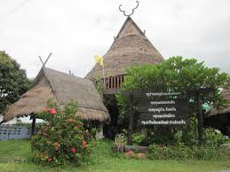

เจษฎาเทคนิคมิวเซี่ยม
เป็นพิพิธภัณฑ์ที่รวมรวบและจัดแสดงยานยนต์ เครื่องกล ยานพาหนะ หลากหลายชนิด จากทั่วทุกมุมโลก มีทั้ง ยานพาหนะทางบก ทางน้ำ ทางอากาศ เช่น รถเล็ก รถการ์ตูน เรือดำน้ำสัญชาติรัสเซีย เครื่องบินโบอิ้ง 747 เครื่องบินไทรสตาร์ ฯลฯ
สวนสมุนไพรสิรีรุกขชาติ
มีพื้นที่ 38 ไร่ รวบรวมพันธุ์สมุนไพรกว่า 1,200 ชนิด พร้อมแสดงป้ายชื่อและสรรพคุณที่ชัดเจน จึงเหมาะที่จะเป็นห้องเรียนธรรมชาติสำหรับนักเรียน นักศึกษา นักวิชาการรวมทั้งผู้สนใจทั่วไป
พิพิธภัณฑ์พระบาทสมเด็จพระมงกุฎเกล้าฯ เจ้าอยู่หัว (พระราชวังสนามจันทร์)
พระราชวังแห่งนี้พระบาทสมเด็จพระมงกุฎเกล้าเจ้าอยู่หัวทรงพระกรุณาโปรดเกล้าฯ ให้สร้างขึ้น ตั้งแต่ยังทรงดำรงพระยศเป็นสมเด็จพระบรมโอรสาธิราชสยามมกุฎราชกุมาร เริ่มก่อสร้างในปี พ.ศ. 2450
พุทธมณฑล อำเภอพุทธมณฑล
เป็นสถานที่สำคัญทางพุทธศาสนา ตั้งอยู่ที่ตำบลศาลายา มีพื้นที่ประมาณ 2,500 ไร่ พุทธมณฑลเป็นสถานที่ซึ่งรัฐบาลและประชาชนชาวไทยร่วมใจกันจัดสร้างขึ้นในปี พ.ศ. 2500 เนื่องในโอกาสที่พุทธศาสนาเจริญรุ่งเรืองมาได้ถึง 2,500 ปี
วัดพระปฐมเจดีย์ราชวรวิหาร
เป็นพระสถูปเจดีย์ที่มีขนาดใหญ่ที่สุดในประเทศไทย จังหวัดนครปฐมได้ใช้พระปฐมเจดีย์เป็นตราประจำจังหวัด พระปฐมเจดีย์ที่เห็นอยู่ในปัจจุบันนี้เป็นองค์ที่สร้างขึ้นในสมัยรัชกาลที่ 4 เมื่อ พ.ศ. 2396 โดยโปรดเกล้าฯให้สร้างครอบพระเจดีย์องค์เดิมซึ่งเป็นเจดีย์เก่าแก่มีฐานแบบโอคว่ำและมียอดปรางค์อยู่ข้างบน สันนิษฐานว่ามีอายุอยู่ในตอนต้นพุทธศตวรรษที่ 4
ตลาดน้ำวัดลำพญา
ตั้งอยู่บริเวณหน้าวัดลำพญา ริมแม่น้ำนครชัยศรี(ท่าจีน) ลำพระยา เดิมเป็นชื่อของหมู่บ้าน ในสมัยที่ยังเป็นอำเภอบางปลา มณฑลนครชัยศรี มีประวัติเล่าว่าในสมัยรัชกาลที่ 5

หมู่บ้านไทยโซ่ง
ตั้งอยู่ที่บ้านเกาะแรต ตำบลบางปลา อยู่ห่างจากอำเภอบางเลนมาทางทิศใต้ ตามเส้นทางสายบางเลน-ดอนตูม ประมาณ 9 กิโลเมต
แอร์ออร์คิด
สวนกล้วยไม้หลากหลายพันธุ์บนพื้นที่ 120 ไร่ ที่นี่มีห้องเพาะเลี้ยงเนื้อเยื่อกล้วยไม้ ที่อนุบาลกล้วยไม้ พันธุ์กล้วยไม้ที่นี่ทั้งส่งออกต่างประเทศและจำหน่ายในประเทศในราคาย่อมเยา
สวนป่าสมุนไพรวัดปลักไม้ลาย
ตั้งอยู่ที่ตำบลทุ่งขวาง ห่างจากตัวเมืองนครปฐมไปตามถนนสายมาลัยแมน ประมาณ 20 กิโลเมตร ทางเข้าวัดจะอยู่ด้านซ้ายมือ เข้าไปประมาณ 6 กิโลเมตร
มหาวิทยาลัยเกษตรศาสตร์ วิทยาเขตกำแพงแสน (สวนพฤกษศาสตร์)
ตั้งอยู่ที่ถนนมาลัยแมน ห่างจากตัวเมืองไปประมาณ 21 กิโลเมตร ภายในมหาวิทยาลัยมีโครงการต่าง ๆ ที่ให้ความรู้แก่เกษตรกร
ตลาดดอนหวาย
ตั้งอยู่ที่ตำบลบางกระทึก หลังวัดดอนหวาย เป็นตลาดที่ยังเหลือสภาพตลาดเก่าในอดีตสมัยรัชกาลที่ 6 ให้เห็นลักษณะตัวอาคารเป็นอาคารไม้เก่า ๆ
ลานแสดงช้างและฟาร์มจระเข้สามพราน
ตั้งอยู่ริมถนนเพชรเกษมกิโลเมตรที่ 30 ห่างจากสวนสามพราน 1 กิโลเมตร มีเนื้อที่ประมาณ 130 ไร่ เป็นสวนสัตว์นานาชนิด